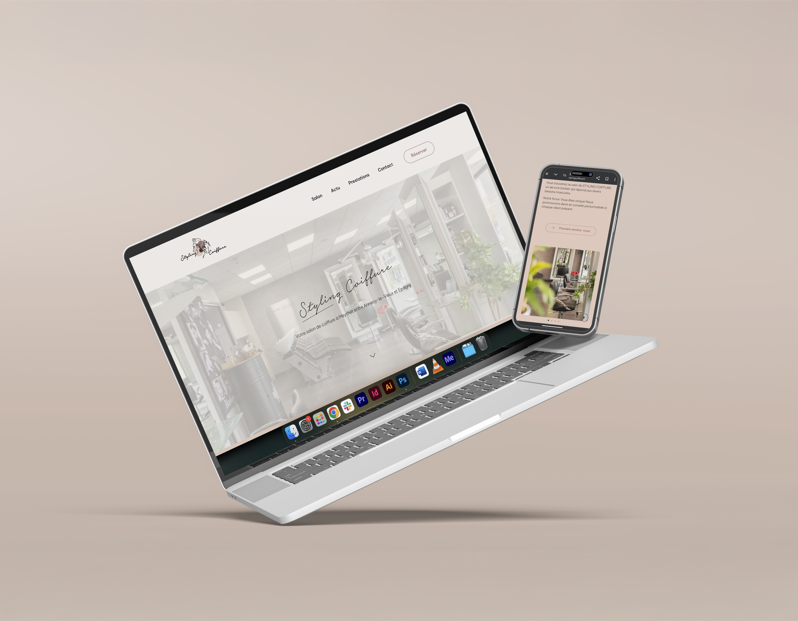
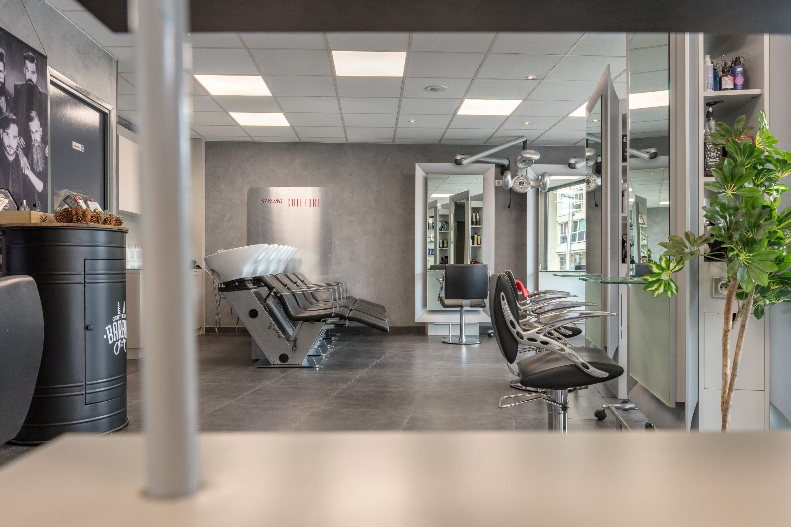
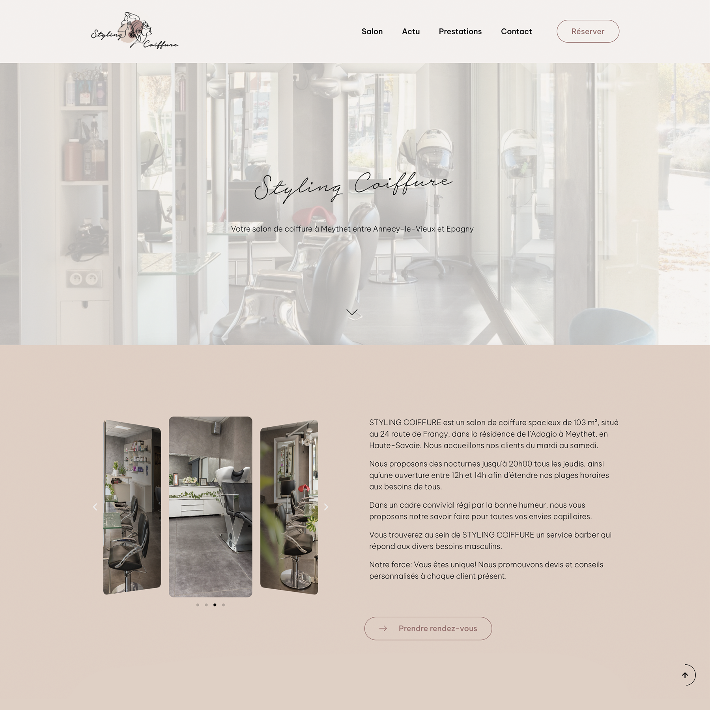
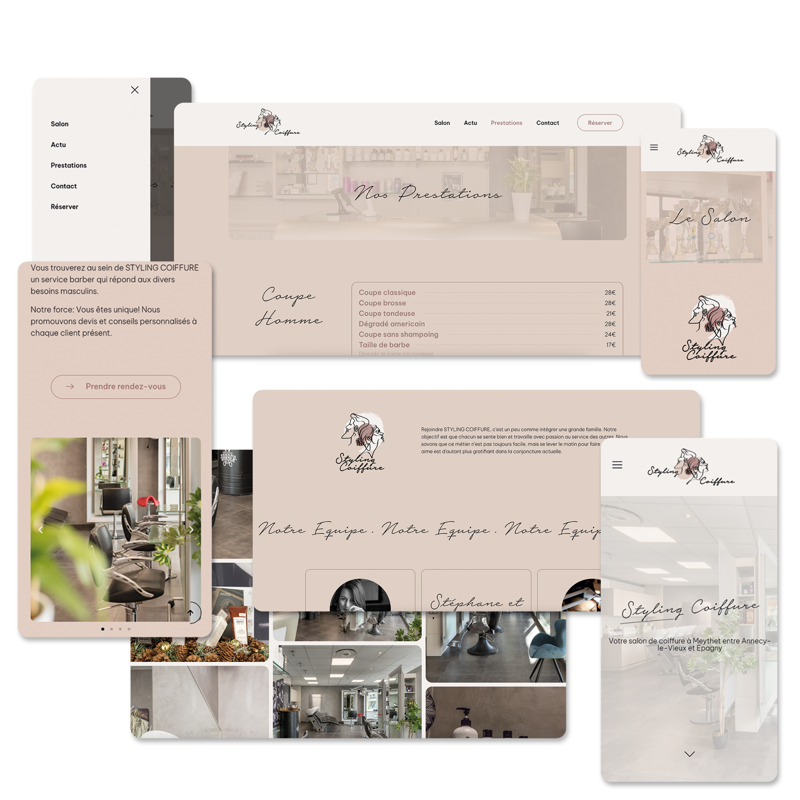

Donner une vitrine digitale à un salon de coiffure ancré dans son territoire, avec modernité et chaleur.
Styling Coiffure est un salon de 103 m² installé à Meythet, en Haute-Savoie. Fondé en octobre 1985 par Stéphane et Brigitte, il perpétue aujourd'hui une tradition familiale d'excellence sous la direction du repreneur actuel.
Le projet consistait à créer un site web qui incarne le caractère professionnel et accueillant du salon — en mettant en valeur son histoire, son équipe, ses services coiffure et onglerie, et en intégrant un module de prise de rendez-vous en ligne.
Le résultat : une interface moderne et intuitive qui renforce la visibilité digitale du salon et attire de nouveaux clients, tout en fidélisant les habitués.


